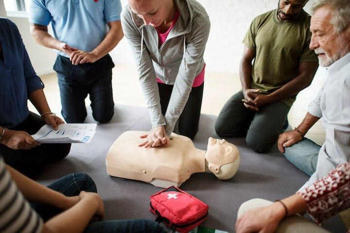

Apprendre la Réanimation Cardiopulmonaire
(NB: de façàn manuelle sans appareil ) (RCP)

Un arrêt cardiaque est l'arrêt soudain du battement du cœur et de la circulation sanguine. Sans intervention immédiate, un arrêt cardiaque peut être fatal en quelques minutes. La réanimation cardiopulmonaire (RCP) est la technique d'urgence permettant de maintenir le flux sanguin jusqu'à l'arrivée des services d'urgence. Fait interressant; la chanson "Stayin' Alive" de Bee Gees a un tempo de 100-120 Battements par minutes c'est parfait lors de la Compression Thoracique.
En cas de doute, commencez les compressions thoraciques. La RCP peut sauver une vie. Chaque minute compte. Ne craignez pas de faire du mal, une mauvaise RCP est préférable à pas de RCP du tout. Après chaque intervention, contactez les services médicaux d'urgence.